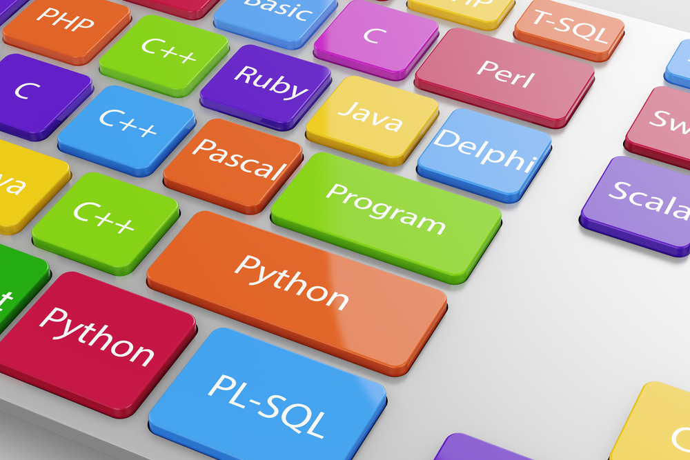

Introducción a HTML y CSS

HTML y CSS son las bases del desarrollo web. HTML estructura el contenido, mientras que CSS se encarga del estilo y diseño. Aprender estos lenguajes es esencial para cualquier desarrollador web.
Lenguajes de Programación Populares en 2024
Algunos lenguajes como Python, JavaScript y Rust lideran el panorama en 2024. Cada uno tiene sus fortalezas: Python para la IA, JavaScript para el desarrollo web y Rust para sistemas de alto rendimiento.
Herramientas para Desarrolladores

Existen herramientas como VS Code, GitHub y Docker que hacen la vida de los desarrolladores más fácil. Estas permiten codificar, colaborar y desplegar aplicaciones de manera eficiente.